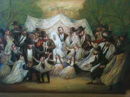

בס"ד
מהגאון ר' שלמה זלמן אויערבך זצ''ל
טעם החיוב לשמח חתן וכלה
חז"ל הפליגו מאד בחיוב שמחת חתן וכלה, ואמרו שהמשמחו זוכה לתורה שניתנה בחמשה קולות. וכבר תמהים כולם מהו טעם גודל החיוב לשמחם, אמנם יש מצוה להחיות רוח שפלים ולהחיות לב נדכאים אך חתן וכלה הרי בלא"ה שמחים מעצמם על יום חתונתם ויום שמחת ליבם, א"כ מהו החיוב הגדול להוסיף ולשמחם.
גם רואים אנו שהמצוה לשמח חתן וכלה היא כ"כ חשובה עד שאצל אדם וחוה הקב"ה בכבודו ובעצמו שימח אותם, אע"פ שהמלאכים כבר נבראו ביום השני והיה יכול לעשות זאת ע"י המלאכים.
הנה ידוע ההבדל בין קדושת התורה לבין הבנתן של אומות העולם, דאצל אוה"ע כל הרוצה להתעלות ולהיות אדם יותר רוחני צריך הוא לשבור גופו בתעניות וסיגופים וצריך פרישות מן האשה, ולשיטתן חוש המישוש חרפה הוא למין האנושי, וזוהי דרך נזיריהם. אך בתורתנו הקדושה איתא דנזיר המצער עצמו מן היין נקרא חוטא (תענית יא.) וכשיש פעם אחת בשנה ביוהכ"פ מצוה מן התורה לצום ולהתענות יש מצוה מן התורה לאכול ביום שלפניו. וגם מצות פו"ר אף שהשכל מחייבו וא"צ לזה חיוב ע"י מצוה, באמת אצלנו היא מצוה רבה [כדאיתא בגמ' לגבי כמה ענינים, כגון למכור ס"ת, ולצאת לחו"ל, ולענין שחרור חצי עבד וחצי בן חורין], וכהן גדול [שקדושתו חמורה] ביום הכיפורים [שהוא היום הקדוש ביותר] ונכנס לפני ולפנים [שהוא המקום המקודש ביותר] עבודתו פסולה אם אין לו אשה, וכל זה הוא ההיפך הגמור מכל הבנתם של אומות העולם.
וכל זה משום שתורתנו תורת חיים היא ולא ניתנה תורה למלאכי השרת, ולכן כל הדברים שנותנים ומקיימים את החיים בעוה"ז מתקדשים הם ע"י התורה הקדושה, לכן אומרים ומברכים "ברוך אתה ה' מקדש עמו ישראל ע"י חופה וקידושין", דעם ישראל מתקדש ע"י חופה וקידושין, משא"כ אומות העולם מרגישים בזה פחיתות וירידה. ואדרבה דוקא ע"י החיתון זוכה האדם לתורה כמבואר בגמ' יבמות (סב ע"ב) דהשרוי בלא אשה שרוי בלא תורה. וזוכים אף להשראת השכינה בבית כמו שאמרו חז"ל בסוטה (יז ע"א) איש ואשה זכו שכינה ביניהם. ואף תינוקות של בית רבן, אינם כמו אצל אוה"ע שהם רק בגדר הכשר לקראת העתיד אלא אצלנו הם קדושים וטהורים וכל העולם מתקיים בזכות הבל פיהם.
ולכן כשם שעשו חז"ל כמה ענינים להוציא מליבם של הצדוקים, כגון בשמחת בית השואבה (שהצדוקים כפרו בניסוך המים), ובעשיית אפר פרה אדומה, כך מרבים אנו את השמחה בנישואין כדי להוציא מלב הטועים, וככל שמרבים את השמחה מראים אנו כבר כמה ענין האיסורין הוא קדוש ונשגב בעינינו.
ולכן ה"אירוסין" נקראים בלשון חז"ל "קידושין" להראות שזה מוסיף קדושה. ומאידך אשה שבגדה בבעלה נקראת בתורה בלשון מעילה כמש"כ (במדבר ה, יב) "איש איש כי תשטה אשתו ומעלה בו מעל", והיינו כמו מי שמועל בהקדש.
על כן צריך להרבות ולהגדיל את השמחה, ולהודות ולהלל לה' יתברך על כל זה.